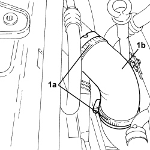

1048B19 TURBOCHARGER AIR OUTLET HOSE -R.R.
- Path
- Procedures > 10 ENGINE > 1048 ENGINE AIR SUPPLY CIRCUIT > 1048B PRESSURE AIR CIRCUIT > 1048B19 TURBOCHARGER AIR OUTLET HOSE -R.R.
- Kind
- repair procedure (removal / refitting; the operation number is the code)
- Applies to
- engines: 1.9 JTD 8v, 1.9 JTD 16v; all production periods
- Interactive page
- https://sloeber94.github.io/elrnDB-fCrm/en/#/194002167
Applies to: engines: 1.9 JTD 8v, 1.9 JTD 16v; all production periods
 Removing
Removing
 Refitting
RefittingOp. 1016A10 SOUND-PROOFING COVER - R.R
1. Loosen the bands (1a) and remove the air outlet hose from the turbocharger (1b).

Applies to: engines: 1.9 JTD 8v, 1.9 JTD 16v; all production periods
Refitting
Removing- Place the air outllet hose from the turbocharger back in its housing and secure it using the bands.
Topics linked from this page (1)
Topics that link to this page (15)
- 1048A50 TURBOCHARGER AIR INTAKE PIPE - R.R.
- 1048B10 RIGID SUPPLY PIPE (ONE) BETWEEN TURBOCHARGER AND HEAT EXCHANGER -R.R.
- 1048B14 AIR DELIVERY HOSE BETWEEN TURBOCHARGER AND HEAT EXCHANGER - REPLACE
- 1048B50 TURBOCHARGER INTERCOOLER - R + R
- 1064A27 PIPE BETWEEN VACUUM RESERVOIR AND ACTUATOR CONTROL SOLENOID VALVE - R.R.
- 1072C44 EXHAUST MANIFOLD HEAT SHIELD - R+R
- 1080B40 CATALYTIC PRE-CONVERTER - R.R
- 1080B62 CATALYTIC CONVERTER - R + R
- 1080D22 OIL VAPOUR PIPE FROM TAPPET COVER TO INTAKE - R.R
- 1084B40 ENGINE OIL DELIVERY PIPE TO TURBOCHARGER - R + R
- 1084B42 ENGINE OIL RETURN PIPE FROM TURBO - R + R
- 1088B20 ENGINE COOLING RADIATOR - R + R
- 1088D10 LOWER RADIATOR COOLANT OUTLET HOSE - R.R.
- 1088D24 WATER PUMP RIGID COOLANT INLET PIPE - R.R.
- 1088E11 FANS WITH SINGLE ENGINE DUCT - R+R